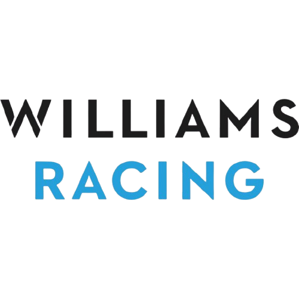
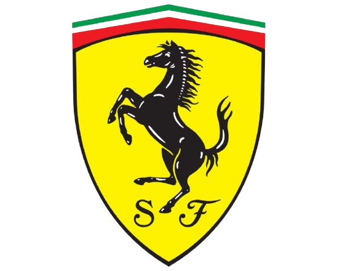
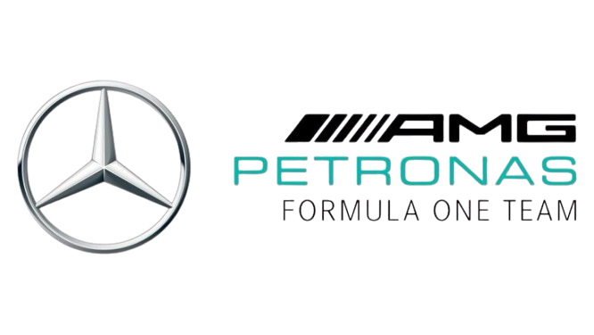
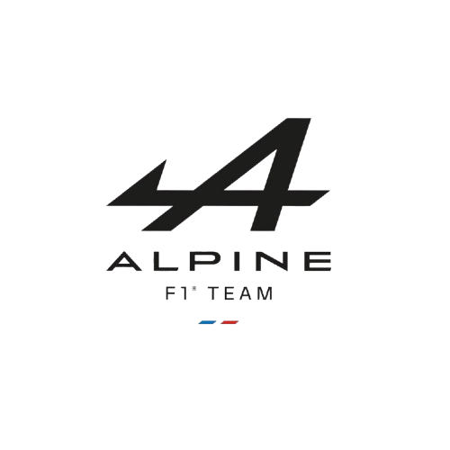
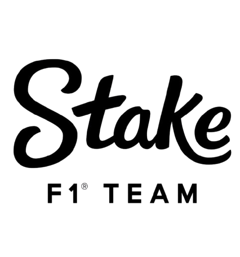
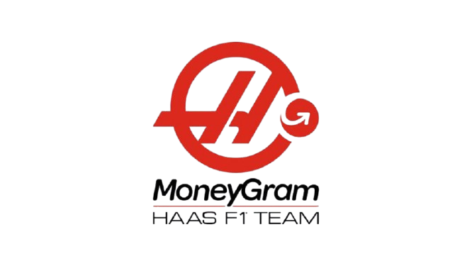

McLaren Racing Limited, más conocida comúnmente como McLaren F1 Team, es una escudería británica de automovilismo con sede en Woking, Inglaterra. Fue fundada en 1963 por el piloto neozelandés Bruce McLaren. Wikipedia
Fundador: Bruce McLaren
Organización principal: McLaren Group
Red Bull Racing
Red Bull Racing es una escudería austriaca de Fórmula 1 con sede en Milton Keynes, propiedad de la empresa fabricante de bebidas energéticas Red Bull GmbH. Wikipedia
Director ejecutivo: Laurent Mekies (9 jul 2025–)
Fundador: Dietrich Mateschitz
Lugar de fundación: Reino Unido
Director/es: Laurent Mekies
Filial: Equipo Júnior de Red Bull
Ubicación: Milton Keynes, Reino Unido
Campeonatos de Constructores: 6 (2010, 2011, 2012, 2013, 2022, 2023)

Williams
Williams Grand Prix Engineering Limited, conocido por motivos de patrocinio como Atlassian Williams Racing, es un equipo de Fórmula 1 fundado por Frank Williams y Patrick Head en 1977. Wikipedia
Base: Grove, Oxfordshire, Reino Unido
Campeonatos de Constructores: 9 (1980, 1981, 1986, 1987, 1992, 1993, 1994, 1996, 1997)
Carreras: 832 (828)
Debut: Gran Premio de España de 1977
Director/es: James Vowles
Fundación: 1977
Ingeniero jefe: Pat Fry

Ferrari
Scuderia Ferrari, conocida por motivos de patrocinio como Scuderia Ferrari HP, es la división deportiva de automóviles Ferrari encargada de las competiciones de automovilismo en Fórmula 1 y en el Campeonato Mundial de Resistencia de la FIA. Wikipedia
Fundador: Enzo Ferrari
Organización principal: Ferrari
Presidente: John Elkann
Fundación: 16 de noviembre de 1929
Base: Maranello, Italia
Campeonatos de Constructores: 16 (1961, 1964, 1975, 1976, 1977, 1979, 1982, 1983, 1999, 2000, 2001, 2002, 2003, 2004, 2007, 2008)
Carreras: 1094

Mercedes
Mercedes-Benz es una de las automotrices más exitosas de la Fórmula 1, considerada uno de los cuatro equipos con mejores resultados, junto con Williams, Ferrari y McLaren. Participó inicialmente como constructor en Fórmula 1 en 1954 y 1955, y volvió a hacerlo desde 2010 hasta la actualidad. Wikipedia
Director ejecutivo: Toto Wolff (2020–)
Fundador: Norbert Haug
Director/es: Toto Wolff
Organización principal: Mercedes-Benz
Fundación: 2010
Campeonatos de Constructores: 8 (2014, 2015, 2016, 2017, 2018, 2019, 2020, 2021)
Carreras: 311

Alpine
Alpine F1 Team, es una escudería francesa de Fórmula 1 con sede en Reino Unido y propiedad del Grupo Renault, que hizo su debut en la temporada 2021. Reemplazó a Renault para promocionar la gama deportiva de vehículos Alpine. Wikipedia
Director/es: Flavio Briatore
Presidente: Philippe Krief
Campeonatos de Constructores: 0
Carreras: 84
Chasis: A525
Fundación: 2021
Racing Bull
Racing Bulls S. p. A. es una escudería italiana de Fórmula 1 que hizo su debut en la temporada 2024. Es propiedad de la empresa Red Bull GmbH. Entre 2020 y 2023 fue conocida como AlphaTauri, y a mediados de 2023 se anunció el cambio de nombre en medio de una reestructuración. Wikipedia
Fundador: Dietrich Mateschitz
Ubicación: Faenza, Italia

Aston Martin
Aston Martin F1 es un equipo británico de Fórmula 1 que regresó a la competición en 2021, tras una ausencia de 61 años, como una reorganización del Racing Point F1 Team. El equipo, propiedad de Lawrence Stroll y con sede en Silverstone, utiliza motores Mercedes-AMG y tiene como pilotos a Fernando Alonso y Lance Stroll. En 2025, el equipo contará con el director Andy Cowell y un nuevo túnel de viento para desarrollar sus coches.
Historia y Regreso
Primeros Años: Aston Martin participó en la Fórmula 1 como equipo fabricante entre 1959 y 1960, con un monoplaza propio, pero sin obtener puntos.
Reorganización de Racing Point: En 2021, el equipo Racing Point fue renombrado como Aston Martin bajo el liderazgo de Lawrence Stroll, que había adquirido el equipo anteriormente.
Propiedad y Sede
Propiedad: La escudería es propiedad de un consorcio de inversores encabezado por el canadiense Lawrence Stroll, quien también es dueño de la marca Aston Martin.
Ubicación: El equipo tiene su sede en Silverstone, Reino Unido, un lugar estratégico aledaño al famoso circuito.
Pilotos y Dirección
Pilotos Actuales (2025): Los pilotos oficiales son Fernando Alonso y Lance Stroll.
Dirección: Andy Cowell reemplazó a Mike Krack como director del equipo en enero de 2025.

Kick Sauber
Sauber Motorsport, conocida simplemente como Sauber, es una empresa constructora de automovilismo con base en Hinwil, Suiza. Ha competido en la Fórmula 1 con una escudería propia durante tres etapas distintas, y actualmente participa bajo la denominación de Stake F1 Team Kick Sauber por motivos publicitarios. Wikipedia
Fundación: 1970
Base: Hinwil, Suiza
Campeonatos de Pilotos: 0
Carreras: 483 (480)
Debut: Gran Premio de Sudáfrica de 1993
Fundador/es: Peter Sauber
Podios: 28

Haas
Haas Formula LLC, comercialmente Haas F1 Team y actualmente como MoneyGram Haas F1 Team por razones de patrocinio, es un equipo estadounidense de carreras de Fórmula 1 construido por el empresario y ... Wikipedia
Fundador: Gene Haas
Fundación: 2014
Director/es: Ayao Komatsu
Oficinas centrales: Kannapolis, Carolina del Norte, Estados Unidos
Campeonatos de Escuderías: 0
Carreras: 184
Debut: Gran Premio de Australia de 2016